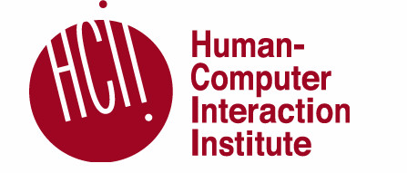

© 2017. All rights reserved.
© 2017. All rights reserved.
NEWS: I’ll be starting as a Ph.D. student at the Human Computer Interaction Institute @ Carnegie Mellon University in Fall 2017.


I am a senior undergraduate student at the University of Michigan in the Computer Science and Engineering department. Prior to Michigan, I was an undergraduate student at the Shanghai Jiao Tong University, where I was awarded the Tang-Junyuan Fellowship for Outstanding Academic Performance (2015-2017).
I am honored to be an undergraduate researcher in the Crowds + Machines Lab advised by Dr. Walter S. Lasecki. My research interests include human-computer interaction, hybrid intelligent systems, user interface development, and human-in-the-loop machine learning. My broad vision is to build intelligent systems and interfaces that improve everyday user experience.